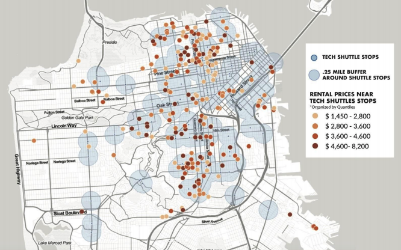

Toggle navigation
CP 101 Summmer 2020
Course Schedule
Project Examples
Assignment 1
Assignment 2
Assignment 3
Assignment 4
Resources
Course Materials
Statistics Reference
Data Portals
Course Topics
Story Mapping
Assignment 4: Final Project
¶

The Influence of Tech Shuttle Stops on Local Rental Listings
Eva Phillips, Emily Wolfson & Rivka Batlan
Banking Deserts
Sophie Bandarkar & Barbara de Alfaro
Hurricane Harvey
Tess Hanson
Urban Impact of Hurricane Sandy in New York
Sam Afsharipour & Heidi Dong
LA Congestion
Brian Le
Alameda County Environmental and Health Disparities
Nida Mirza
Firearms in the US
Iris Ye
Internet/computer access
Luke Zhang